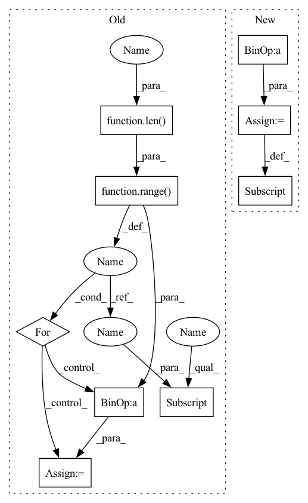

Pattern ID :29920

Before Change
def __call__(self, image, target):
if random.random() < self.prob:
image = TF.vflip(image)
for idx in range(len(target)):
target[idx]["bbox"][1] = 1.0 - target[idx]["bbox"][1]
return image, target
After Change
if random.random() < self.prob:
d["images"] = TF.vflip(d["images"])
if len(d["boxes"]) > 0:
d["boxes"][..., 1] = 1.0 - d["boxes"][..., 1]
return d
In pattern: SUPERPATTERN
Frequency: 3
Non-data size: 9
Instances
Fragment ID: 88796585
Project Name: krenerd/awesome-modular-pytorch-lightning
Commit Name: 3f592c9713d3bcd143a9a59dde3e93688e31f414
Time: 2022-06-07
Author: 48239275+krenerd@users.noreply.github.com
File Name: data/transforms/vision/detection.py
M Class Name: DetectionVFlip
N Class Name: DetectionVFlip
M Method Name: __call__(2)
N Method Name: __call__(3)
M Parent Class: _BaseTransform
N Parent Class: _BaseTransform
M File Name: data/transforms/vision/detection.py
N File Name: data/transforms/vision/detection.py
M Start Line: 203
M End Line: 208
N Start Line: 264
N End Line: 267
'>
Before Change
def __call__(self, image, target):
if random.random() < self.prob:
image = TF.hflip(image)
for idx in range(len(target)):
target[idx]["bbox"][0] = 1.0 - target[idx]["bbox"][0]
return image, target
After Change
if random.random() < self.prob:
d["images"] = TF.hflip(d["images"])
if len(d["boxes"]) > 0:
d["boxes"][..., 0] = 1.0 - d["boxes"][..., 0]
return d
'>
Fragment ID: 88796590
Project Name: krenerd/awesome-modular-pytorch-lightning
Commit Name: 3f592c9713d3bcd143a9a59dde3e93688e31f414
Time: 2022-06-07
Author: 48239275+krenerd@users.noreply.github.com
File Name: data/transforms/vision/detection.py
M Class Name: DetectionHFlip
N Class Name: DetectionHFlip
M Method Name: __call__(2)
N Method Name: __call__(3)
M Parent Class: _BaseTransform
N Parent Class: _BaseTransform
M File Name: data/transforms/vision/detection.py
N File Name: data/transforms/vision/detection.py
M Start Line: 184
M End Line: 189
N Start Line: 251
N End Line: 254
'>
Before Change
weights[n_gram-1] = 1
weights = tuple(weights)
self_bleu_score = []
for idx in range(len(generate_corpus)):
candidate = generate_corpus[idx]
reference_corpus = generate_corpus[:idx] + generate_corpus[idx+1:]
self_bleu_score.append(sentence_bleu(reference_corpus, candidate, weights,
smoothing_function=SmoothingFunction().method1))
return sum(self_bleu_score) / len(self_bleu_score)
After Change
return results
def self_bleu_(generate_corpus, n_grams, reference_corpus=None):
weight = [0] * max(n_grams)
weights = {}
for n_gram in n_grams:
weight[n_gram - 1] = 1.0
weights[n_gram] = tuple(weight)
weight[n_gram - 1] = 0.0
bleu = SelfBLEU(generate_corpus, weights)
'>
Fragment ID: 88796589
Project Name: rucaibox/textbox
Commit Name: 74995b26ad538f821707a331a83f34c8559f1ed8
Time: 2020-12-03
Author: 1020139164@qq.com
File Name: textbox/evaluator/metrics.py
M Class Name: AnonimousClass
N Class Name: AnonimousClass
M Method Name: self_bleu_(3)
N Method Name: self_bleu_(3)
M Parent Class:
N Parent Class:
M File Name: textbox/evaluator/metrics.py
N File Name: textbox/evaluator/metrics.py
M Start Line: 29
M End Line: 38
N Start Line: 40
N End Line: 54
'>
Before Change
def __call__(self, image, target):
if random.random() < self.prob:
image = TF.vflip(image)
for idx in range(len(target)):
target[idx]["bbox"][1] = 1.0 - target[idx]["bbox"][1]
return image, target
After Change
if random.random() < self.prob:
d["images"] = TF.vflip(d["images"])
if len(d["boxes"]) > 0:
d["boxes"][..., 1] = 1.0 - d["boxes"][..., 1]
return d
'>
Fragment ID: 88796596
Project Name: krenerd/awesome-modular-pytorch-lightning
Commit Name: 3f592c9713d3bcd143a9a59dde3e93688e31f414
Time: 2022-06-07
Author: 48239275+krenerd@users.noreply.github.com
File Name: data/transforms/vision/detection.py
M Class Name: DetectionVFlip
N Class Name: DetectionVFlip
M Method Name: __call__(2)
N Method Name: __call__(3)
M Parent Class: _BaseTransform
N Parent Class: _BaseTransform
M File Name: data/transforms/vision/detection.py
N File Name: data/transforms/vision/detection.py
M Start Line: 203
M End Line: 208
N Start Line: 264
N End Line: 267